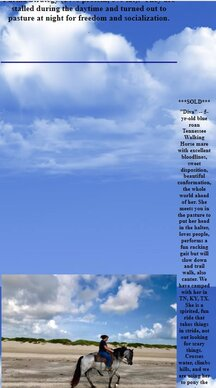

Visual Hierarchy
fullstory
fullstory.comThis a great example of how to use size and scale to emphasize visual hierarchy. The first thing you’re drawn to in the design is the huge text that explains what the product is all about. This is done in a way that doesn’t detract from the other elements on the screen.
PARC: Alignment
CLOUD 9 WALKERS
cloud9walkers.com On this website, we can't see an alignment between the text and the image, we noticed that the image horizontally doesn't fit with the text, also the image is so far from the text before, this is a clear example of what we need to avoid to do in our website.
PARC: Proximity
On this page adding white space to a design is an element of proximity that designers will employ to strengthen groupings as well as differentiate elements from one another. This aids in the creation of focal points, which on most websites, are in the form of a call to action (CTA) buttons, such as “sign up” or “learn more.” By isolating the elements of a CTA, a designer is able to guide a viewer to that part of the page and enhance a user’s experience.